Café Belmont
Matcha bar i kawiarnia specialty na Kazimierzu w Krakowie, kawałek od Placu Nowego. Matcha jest u nas punktem wyjścia, nie dodatkiem do kawy.
Matcha bar na Kazimierzu
Café Belmont to miejsce, w którym dzień zaczyna się od dobrze zrobionej matchy i kawy specialty. Matchę ubijamy na gładką piankę, żeby smak był pełny i słodkawy, a nie gorzki. Do tego proste japońskie jedzenie: onigiri i śniadania do południa.
Więcej o matchy i kawie
Matchę bierzemy od Yume i mamy ją w trzech gatunkach. Yume Asa to wersja na co dzień, łagodna i czysta. Yume Hana jest bardziej wyrazista, z wyższą nutą słodyczy. Yume Hoshi to gatunek ceremonialny, gęsty i intensywny, dla osób które chcą poczuć matchę w pełni. Każdą zrobimy jako matcha latte na gorąco, iced matcha latte albo, po naszemu, matcha tonic z tonikiem i lodem.
Jeśli wolisz kawę, jest pełne specialty: od espresso i flat white po batch brew, cold brew i espresso tonic. Mleko wybierasz sam, także roślinne, Oatly albo Sproud. Latem dochodzą pozycje sezonowe, jak jasmine yuzu honey matcha iced tea czy pina colada iced matcha.
Nasza matcha to Yume
Yume to nasza własna marka matchy. Prowadzimy ją razem z Café Belmont i sprowadzamy prosto z Kioto w Japonii. Tę samą matchę pijesz u nas w kubku i kupisz do domu w sklepie Yume.
Trzy gatunki
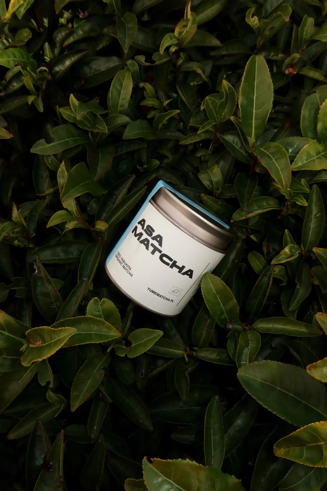
Yume Asa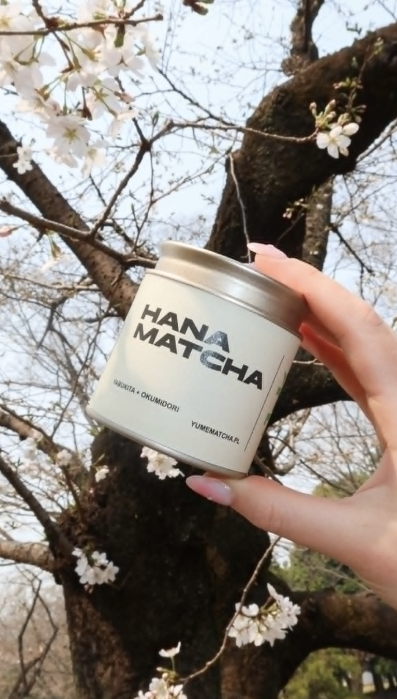
Yume Hana Yume Hoshi
Yume Hoshi
Codzienna, łagodna i czysta. Najlepsza baza pod matcha latte i wersje na zimno.
Dowiedz się więcej →Bardziej wyrazista, z wyższą nutą naturalnej słodyczy. Dla tych, którzy chcą czuć matchę spod mleka.
Dowiedz się więcej →Gatunek ceremonialny, gęsty i intensywny. Najlepiej pić ją bez mleka, ubitą na samej wodzie, żeby poczuć pełnię smaku.
Dowiedz się więcej →Czym jest matcha ceremonialna
Matcha ceremonialna to najwyższa półka. Krzewy herbaty na kilka tygodni przed zbiorem chowa się w cieniu, co podnosi poziom chlorofilu i l-teaniny, a ścina goryczkę. Zbiera się tylko najmłodsze listki, usuwa z nich żyłki i mieli na kamiennych żarnach na puder drobniejszy od mąki. Dlatego dobra matcha jest żywo zielona, gładka i pełna umami, a nie płaska i gorzka. Przygotowuje się ją przez ubijanie, nie zalewanie, i pije w całości, razem z liściem.
Co mówią goście
Najlepsza matcha na Kazimierzu, obsługa zawsze uśmiechnięta. Wracam za każdym razem, gdy jestem w Krakowie.
Onigiri robione na miejscu i świetna kawa — kombinacja, której nie znajdziesz nigdzie indziej w okolicy.
Klimatyczne miejsce, ciche kąty do pracy i naprawdę dobra matcha. Polecam każdemu, kto jest w Kazimierzu.
Częste pytania
Gdzie napić się dobrej matchy w Krakowie?
W Café Belmont na Kazimierzu. To matcha bar, w którym matcha Yume jest podstawą menu: matcha latte, iced matcha i matcha tonic.
Jaką matchę podajecie?
Matchę Yume w trzech gatunkach: Yume Asa, Yume Hana i Yume Hoshi, od codziennej po najbardziej wyrazistą.
Gdzie w Krakowie napić się matcha tonic?
Ice matcha tonic jest w stałym menu Café Belmont na Kazimierzu (22 zł).
Czy zjem u Was śniadanie?
Tak, do 12:00 mamy zestawy śniadaniowe: onigiri z kawą (25 zł) lub z matchą (29 zł).
Czy jest mleko roślinne?
Tak, Oatly i Sproud, do każdej matchy i kawy.
Co zamówić na pierwszy raz?
Na start matcha latte na Yume Asa, a jeśli chcesz coś naszego, ice matcha tonic. Do tego onigiri Tuna Mayo albo Sweet Tofu.
Czym różni się matcha latte od matcha tonic?
Matcha latte to matcha z mlekiem, kremowa i łagodna. Matcha tonic to matcha z tonikiem i lodem, lżejsza, gazowana i bardziej orzeźwiająca.
Czy macie kawę specialty?
Tak, całe menu kawowe jest specialty: espresso, cortado, flat white, cappuccino, latte, batch brew, cold brew, drip i espresso tonic.
Czym jest onigiri?
Japońskie trójkąty z ryżu z nadzieniem. Mamy Sweet Tofu, Tuna Mayo i Umeboshi, a do 12:00 wchodzą w zestawy śniadaniowe.
Czy matcha ma dużo kofeiny?
Matcha naturalnie zawiera kofeinę, a razem z nią l-teaninę, dzięki której pobudza łagodniej i równiej niż espresso.
Gdzie jest Café Belmont?
Na Kazimierzu w Krakowie, kawałek od Placu Nowego.
Czy matchę się parzy?
Nie. Matchy się nie parzy jak herbaty liściastej — nie zalewa się jej wrzątkiem i nie zostawia do naciągnięcia. Sproszkowany liść ubija się w odrobinie wody lub w mleku, aż powstanie gładka pianka, i pije w całości. Dlatego u nas mówimy, że matchę się ubija albo przygotowuje, a nie parzy.
Znajdziesz nas
ul. Berka Joselewicza 12, 31-051 Kraków
Kazimierz, kawałek od Placu Nowego
Pon–Nd 9:00–19:00
Kazimierz, po naszemu
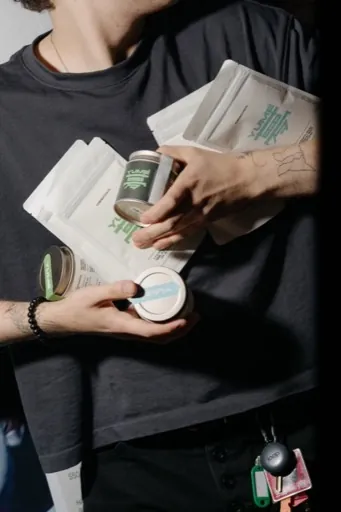
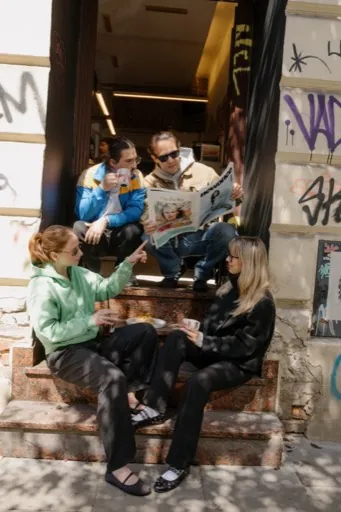
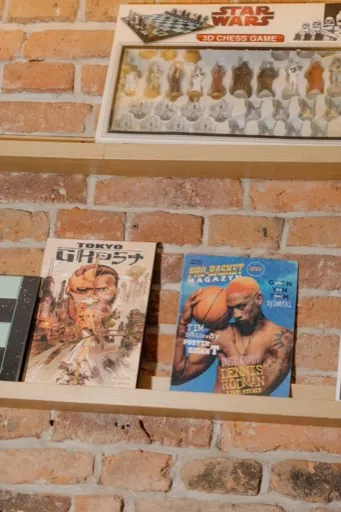
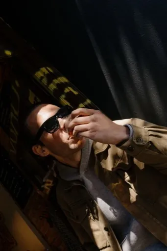
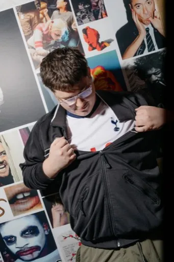
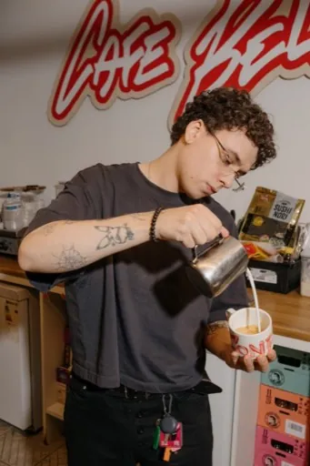
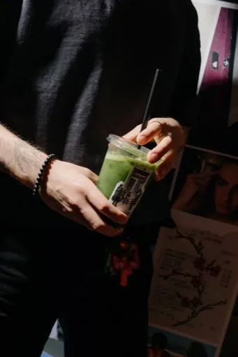
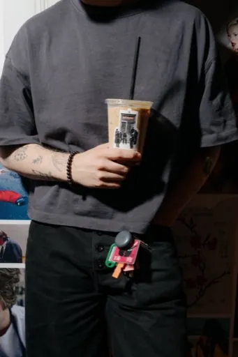
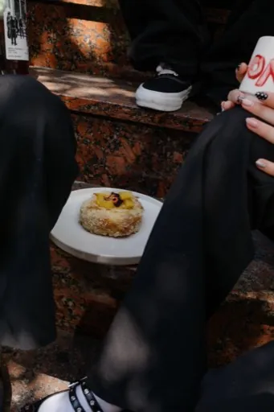
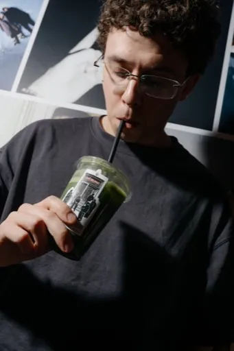
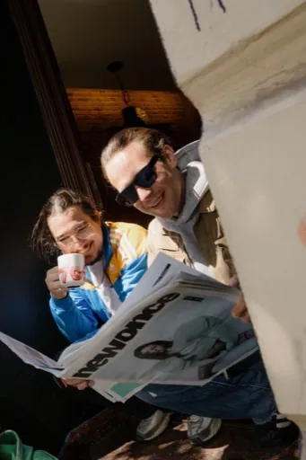